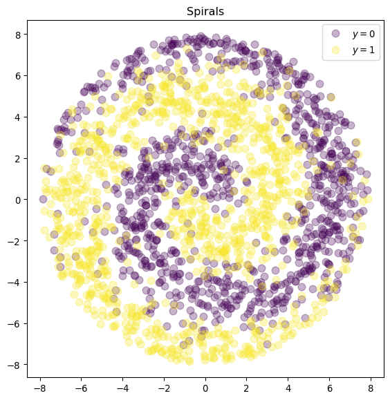
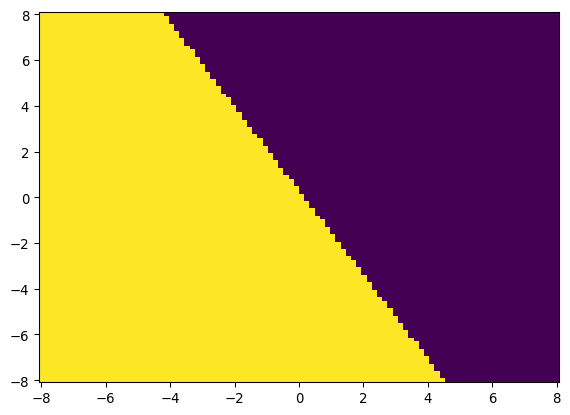
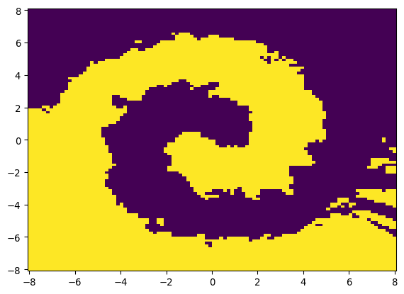
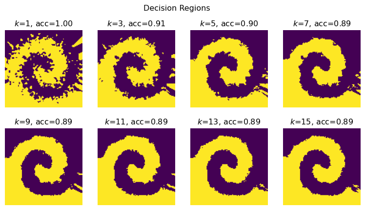

from sklearn.datasets import fetch_california_housing, load_breast_cancer
from sklearn.linear_model import LinearRegression, LogisticRegression
from sklearn.ensemble import RandomForestRegressor
from sklearn.neighbors import KNeighborsClassifier
from sklearn.metrics import (
mean_squared_error,
mean_absolute_percentage_error,
accuracy_score
)
import pandas as pd
import matplotlib
from matplotlib import pyplot as plt
import numpy as np
from collections import CounterSklearn workflow
Scikit-learn has a very clean and consistent API, making it very easy to use: a similar workflow can be applied to most techniques. Let’s go over two examples.
This code was modified from Matthew Greenberg.
Load packages
Example 1: California housing dataset
Load and explore the data
cal_housing = fetch_california_housing()
type(cal_housing)sklearn.utils._bunch.BunchLet’s look at the attributes of cal_housing:
dir(cal_housing)['DESCR', 'data', 'feature_names', 'frame', 'target', 'target_names']cal_housing.feature_names['MedInc',
'HouseAge',
'AveRooms',
'AveBedrms',
'Population',
'AveOccup',
'Latitude',
'Longitude']print(cal_housing.DESCR).. _california_housing_dataset:
California Housing dataset
--------------------------
**Data Set Characteristics:**
:Number of Instances: 20640
:Number of Attributes: 8 numeric, predictive attributes and the target
:Attribute Information:
- MedInc median income in block group
- HouseAge median house age in block group
- AveRooms average number of rooms per household
- AveBedrms average number of bedrooms per household
- Population block group population
- AveOccup average number of household members
- Latitude block group latitude
- Longitude block group longitude
:Missing Attribute Values: None
This dataset was obtained from the StatLib repository.
https://www.dcc.fc.up.pt/~ltorgo/Regression/cal_housing.html
The target variable is the median house value for California districts,
expressed in hundreds of thousands of dollars ($100,000).
This dataset was derived from the 1990 U.S. census, using one row per census
block group. A block group is the smallest geographical unit for which the U.S.
Census Bureau publishes sample data (a block group typically has a population
of 600 to 3,000 people).
A household is a group of people residing within a home. Since the average
number of rooms and bedrooms in this dataset are provided per household, these
columns may take surprisingly large values for block groups with few households
and many empty houses, such as vacation resorts.
It can be downloaded/loaded using the
:func:`sklearn.datasets.fetch_california_housing` function.
.. rubric:: References
- Pace, R. Kelley and Ronald Barry, Sparse Spatial Autoregressions,
Statistics and Probability Letters, 33 (1997) 291-297
X = cal_housing.data
y = cal_housing.targetThis can also be obtained with X, y = fetch_california_housing(return_X_y=True).
Let’s have a look at the shape of X and y:
X.shape(20640, 8)y.shape(20640,)While not at all necessary, we can turn this bunch object into a more familiar data frame to explore the data further:
cal_housing_df = pd.DataFrame(cal_housing.data, columns=cal_housing.feature_names)cal_housing_df.head()| MedInc | HouseAge | AveRooms | AveBedrms | Population | AveOccup | Latitude | Longitude | |
|---|---|---|---|---|---|---|---|---|
| 0 | 8.3252 | 41.0 | 6.984127 | 1.023810 | 322.0 | 2.555556 | 37.88 | -122.23 |
| 1 | 8.3014 | 21.0 | 6.238137 | 0.971880 | 2401.0 | 2.109842 | 37.86 | -122.22 |
| 2 | 7.2574 | 52.0 | 8.288136 | 1.073446 | 496.0 | 2.802260 | 37.85 | -122.24 |
| 3 | 5.6431 | 52.0 | 5.817352 | 1.073059 | 558.0 | 2.547945 | 37.85 | -122.25 |
| 4 | 3.8462 | 52.0 | 6.281853 | 1.081081 | 565.0 | 2.181467 | 37.85 | -122.25 |
cal_housing_df.tail()| MedInc | HouseAge | AveRooms | AveBedrms | Population | AveOccup | Latitude | Longitude | |
|---|---|---|---|---|---|---|---|---|
| 20635 | 1.5603 | 25.0 | 5.045455 | 1.133333 | 845.0 | 2.560606 | 39.48 | -121.09 |
| 20636 | 2.5568 | 18.0 | 6.114035 | 1.315789 | 356.0 | 3.122807 | 39.49 | -121.21 |
| 20637 | 1.7000 | 17.0 | 5.205543 | 1.120092 | 1007.0 | 2.325635 | 39.43 | -121.22 |
| 20638 | 1.8672 | 18.0 | 5.329513 | 1.171920 | 741.0 | 2.123209 | 39.43 | -121.32 |
| 20639 | 2.3886 | 16.0 | 5.254717 | 1.162264 | 1387.0 | 2.616981 | 39.37 | -121.24 |
cal_housing_df.info()<class 'pandas.core.frame.DataFrame'>
RangeIndex: 20640 entries, 0 to 20639
Data columns (total 8 columns):
# Column Non-Null Count Dtype
--- ------ -------------- -----
0 MedInc 20640 non-null float64
1 HouseAge 20640 non-null float64
2 AveRooms 20640 non-null float64
3 AveBedrms 20640 non-null float64
4 Population 20640 non-null float64
5 AveOccup 20640 non-null float64
6 Latitude 20640 non-null float64
7 Longitude 20640 non-null float64
dtypes: float64(8)
memory usage: 1.3 MBcal_housing_df.describe() | MedInc | HouseAge | AveRooms | AveBedrms | Population | AveOccup | Latitude | Longitude | |
|---|---|---|---|---|---|---|---|---|
| count | 20640.000000 | 20640.000000 | 20640.000000 | 20640.000000 | 20640.000000 | 20640.000000 | 20640.000000 | 20640.000000 |
| mean | 3.870671 | 28.639486 | 5.429000 | 1.096675 | 1425.476744 | 3.070655 | 35.631861 | -119.569704 |
| std | 1.899822 | 12.585558 | 2.474173 | 0.473911 | 1132.462122 | 10.386050 | 2.135952 | 2.003532 |
| min | 0.499900 | 1.000000 | 0.846154 | 0.333333 | 3.000000 | 0.692308 | 32.540000 | -124.350000 |
| 25% | 2.563400 | 18.000000 | 4.440716 | 1.006079 | 787.000000 | 2.429741 | 33.930000 | -121.800000 |
| 50% | 3.534800 | 29.000000 | 5.229129 | 1.048780 | 1166.000000 | 2.818116 | 34.260000 | -118.490000 |
| 75% | 4.743250 | 37.000000 | 6.052381 | 1.099526 | 1725.000000 | 3.282261 | 37.710000 | -118.010000 |
| max | 15.000100 | 52.000000 | 141.909091 | 34.066667 | 35682.000000 | 1243.333333 | 41.950000 | -114.310000 |
We can even plot it:
plt.hist(y)(array([ 877., 3612., 4099., 3771., 2799., 1769., 1239., 752., 479.,
1243.]),
array([0.14999 , 0.634992, 1.119994, 1.604996, 2.089998, 2.575 ,
3.060002, 3.545004, 4.030006, 4.515008, 5.00001 ]),
<BarContainer object of 10 artists>)Create and fit a model
Let’s start with a very simple model: linear regression.
model = LinearRegression().fit(X, y)This is equivalent to:
model = LinearRegression()
model.fit(X, y)First, we create an instance of the class LinearRegression, then we call .fit() on it to fit the model.
model.coef_array([ 4.36693293e-01, 9.43577803e-03, -1.07322041e-01, 6.45065694e-01,
-3.97638942e-06, -3.78654265e-03, -4.21314378e-01, -4.34513755e-01])Trailing underscores indicate that an attribute is estimated. .coef_ here is an estimated value.
model.coef_.shape(8,)model.intercept_np.float64(-36.94192020718422)We can now get our predictions:
y_hat = model.predict(X)And calculate some measures of error:
- Sum of squared errors
np.sum((y - y_hat) ** 2)np.float64(10821.985154850292)- Mean squared error
mean_squared_error(y, y_hat)0.5243209861846072MSE could also be calculated with np.mean((y - y_hat)**2).
mean_absolute_percentage_error(y, y_hat)0.31715404597233515Index of minimum value:
model.coef_.argmin()np.int64(7)Index of maximum value:
model.coef_.argmax()np.int64(3)XX = np.concatenate([np.ones((len(X), 1)), X], axis=1)
beta = np.linalg.lstsq(XX, y, rcond=None)[0]
intercept_, *coef_ = beta
intercept_, model.intercept_(np.float64(-36.94192020718429), np.float64(-36.94192020718422))np.allclose(coef_, model.coef_)TrueThis means that the two arrays are equal element-wise, within a certain tolerance.
X_test = np.random.normal(size=(10, X.shape[1]))
X_test.shape(10, 8)y_test = X_test @ coef_ + intercept_
y_testarray([-37.7624766 , -35.43989534, -37.62776124, -36.16743807,
-36.70282941, -36.91231298, -36.84916 , -37.72509389,
-35.90083768, -36.00753365])model.predict(X_test)array([-37.7624766 , -35.43989534, -37.62776124, -36.16743807,
-36.70282941, -36.91231298, -36.84916 , -37.72509389,
-35.90083768, -36.00753365])Of course, instead of LinearRegression(), we could have used another model such as a random forest regressor (a meta estimator that fits a number of classifying decision trees on various sub-samples of the dataset and uses averaging to improve the predictive accuracy and control over-fitting) for instance:
model = RandomForestRegressor().fit(X, y).predict(X_test)
modelarray([1.4199201, 1.2526101, 1.5110801, 1.4515 , 1.5110801, 1.4446701,
1.4515 , 1.5110801, 1.4479301, 1.1729801])Which is equivalent to:
model = RandomForestRegressor()
model.fit(X, y).predict(X_test)Example 2: breast cancer
Load and explore the data
b_cancer = load_breast_cancer()Let’s print the description of this dataset:
print(b_cancer.DESCR).. _breast_cancer_dataset:
Breast cancer wisconsin (diagnostic) dataset
--------------------------------------------
**Data Set Characteristics:**
:Number of Instances: 569
:Number of Attributes: 30 numeric, predictive attributes and the class
:Attribute Information:
- radius (mean of distances from center to points on the perimeter)
- texture (standard deviation of gray-scale values)
- perimeter
- area
- smoothness (local variation in radius lengths)
- compactness (perimeter^2 / area - 1.0)
- concavity (severity of concave portions of the contour)
- concave points (number of concave portions of the contour)
- symmetry
- fractal dimension ("coastline approximation" - 1)
The mean, standard error, and "worst" or largest (mean of the three
worst/largest values) of these features were computed for each image,
resulting in 30 features. For instance, field 0 is Mean Radius, field
10 is Radius SE, field 20 is Worst Radius.
- class:
- WDBC-Malignant
- WDBC-Benign
:Summary Statistics:
===================================== ====== ======
Min Max
===================================== ====== ======
radius (mean): 6.981 28.11
texture (mean): 9.71 39.28
perimeter (mean): 43.79 188.5
area (mean): 143.5 2501.0
smoothness (mean): 0.053 0.163
compactness (mean): 0.019 0.345
concavity (mean): 0.0 0.427
concave points (mean): 0.0 0.201
symmetry (mean): 0.106 0.304
fractal dimension (mean): 0.05 0.097
radius (standard error): 0.112 2.873
texture (standard error): 0.36 4.885
perimeter (standard error): 0.757 21.98
area (standard error): 6.802 542.2
smoothness (standard error): 0.002 0.031
compactness (standard error): 0.002 0.135
concavity (standard error): 0.0 0.396
concave points (standard error): 0.0 0.053
symmetry (standard error): 0.008 0.079
fractal dimension (standard error): 0.001 0.03
radius (worst): 7.93 36.04
texture (worst): 12.02 49.54
perimeter (worst): 50.41 251.2
area (worst): 185.2 4254.0
smoothness (worst): 0.071 0.223
compactness (worst): 0.027 1.058
concavity (worst): 0.0 1.252
concave points (worst): 0.0 0.291
symmetry (worst): 0.156 0.664
fractal dimension (worst): 0.055 0.208
===================================== ====== ======
:Missing Attribute Values: None
:Class Distribution: 212 - Malignant, 357 - Benign
:Creator: Dr. William H. Wolberg, W. Nick Street, Olvi L. Mangasarian
:Donor: Nick Street
:Date: November, 1995
This is a copy of UCI ML Breast Cancer Wisconsin (Diagnostic) datasets.
https://goo.gl/U2Uwz2
Features are computed from a digitized image of a fine needle
aspirate (FNA) of a breast mass. They describe
characteristics of the cell nuclei present in the image.
Separating plane described above was obtained using
Multisurface Method-Tree (MSM-T) [K. P. Bennett, "Decision Tree
Construction Via Linear Programming." Proceedings of the 4th
Midwest Artificial Intelligence and Cognitive Science Society,
pp. 97-101, 1992], a classification method which uses linear
programming to construct a decision tree. Relevant features
were selected using an exhaustive search in the space of 1-4
features and 1-3 separating planes.
The actual linear program used to obtain the separating plane
in the 3-dimensional space is that described in:
[K. P. Bennett and O. L. Mangasarian: "Robust Linear
Programming Discrimination of Two Linearly Inseparable Sets",
Optimization Methods and Software 1, 1992, 23-34].
This database is also available through the UW CS ftp server:
ftp ftp.cs.wisc.edu
cd math-prog/cpo-dataset/machine-learn/WDBC/
.. dropdown:: References
- W.N. Street, W.H. Wolberg and O.L. Mangasarian. Nuclear feature extraction
for breast tumor diagnosis. IS&T/SPIE 1993 International Symposium on
Electronic Imaging: Science and Technology, volume 1905, pages 861-870,
San Jose, CA, 1993.
- O.L. Mangasarian, W.N. Street and W.H. Wolberg. Breast cancer diagnosis and
prognosis via linear programming. Operations Research, 43(4), pages 570-577,
July-August 1995.
- W.H. Wolberg, W.N. Street, and O.L. Mangasarian. Machine learning techniques
to diagnose breast cancer from fine-needle aspirates. Cancer Letters 77 (1994)
163-171.
b_cancer.feature_namesarray(['mean radius', 'mean texture', 'mean perimeter', 'mean area',
'mean smoothness', 'mean compactness', 'mean concavity',
'mean concave points', 'mean symmetry', 'mean fractal dimension',
'radius error', 'texture error', 'perimeter error', 'area error',
'smoothness error', 'compactness error', 'concavity error',
'concave points error', 'symmetry error',
'fractal dimension error', 'worst radius', 'worst texture',
'worst perimeter', 'worst area', 'worst smoothness',
'worst compactness', 'worst concavity', 'worst concave points',
'worst symmetry', 'worst fractal dimension'], dtype='<U23')b_cancer.target_namesarray(['malignant', 'benign'], dtype='<U9')X = b_cancer.data
y = b_cancer.targetHere again, we could have used instead X, y = load_breast_cancer(return_X_y=True).
X.shape(569, 30)y.shape(569,)set(y){np.int64(0), np.int64(1)}Counter(y)Counter({np.int64(1): 357, np.int64(0): 212})Create and fit a first model
model = LogisticRegression(max_iter=10000)
y_hat = model.fit(X, y).predict(X)Get some measure of accuracy:
accuracy_score(y, y_hat)0.9578207381370826This can also be obtained with:
np.mean(y_hat == y)def sigmoid(x):
return 1/(1 + np.exp(-x))
x = np.linspace(-10, 10, 100)
plt.plot(x, sigmoid(x), lw=3)
plt.title("The Sigmoid Function $\\sigma(x)$")Text(0.5, 1.0, 'The Sigmoid Function $\\sigma(x)$')y_pred = 1*(sigmoid(X @ model.coef_.squeeze() + model.intercept_) > 0.5)
assert np.all(y_pred == model.predict(X))
np.allclose(
model.predict_proba(X)[:, 1],
sigmoid(X @ model.coef_.squeeze() + model.intercept_)
)Truedef make_spirals(k=20, s=1.0, n=2000):
X = np.zeros((n, 2))
y = np.round(np.random.uniform(size=n)).astype(int)
r = np.random.uniform(size=n)*k*np.pi
rr = r**0.5
theta = rr + np.random.normal(loc=0, scale=s, size=n)
theta[y == 1] = theta[y == 1] + np.pi
X[:,0] = rr*np.cos(theta)
X[:,1] = rr*np.sin(theta)
return X, y
X, y = make_spirals()
cmap = matplotlib.colormaps["viridis"]
a = cmap(0)
a = [*a[:3], 0.3]
b = cmap(0.99)
b = [*b[:3], 0.3]
plt.figure(figsize=(7,7))
ax = plt.gca()
ax.set_aspect("equal")
ax.plot(X[y == 0, 0], X[y == 0, 1], 'o', color=a, ms=8, label="$y=0$")
ax.plot(X[y == 1, 0], X[y == 1, 1], 'o', color=b, ms=8, label="$y=1$")
plt.title("Spirals")
plt.legend()
Create and fit a second model
Here, we use a logistic regression:
model = LogisticRegression()
y_hat = model.fit(X, y).predict(X)
accuracy_score(y, y_hat)0.5785u = np.linspace(-8, 8, 100)
v = np.linspace(-8, 8, 100)
U, V = np.meshgrid(u, v)
UV = np.array([U.ravel(), V.ravel()]).T
U.shape, V.shape, UV.shape((100, 100), (100, 100), (10000, 2))np.ravel returns a contiguous flattened array.
W = model.predict(UV).reshape(U.shape)
W.shape(100, 100)plt.pcolormesh(U, V, W)
Create and fit a third model
Let’s use a k-nearest neighbours classifier this time:
model = KNeighborsClassifier(n_neighbors=5)
y_hat = model.fit(X, y).predict(X)
accuracy_score(y, y_hat)0.8965u = np.linspace(-8, 8, 100)
v = np.linspace(-8, 8, 100)
U, V = np.meshgrid(u, v)
UV = np.array([U.ravel(), V.ravel()]).T
U.shape, V.shape, UV.shape((100, 100), (100, 100), (10000, 2))W = model.predict(UV).reshape(U.shape)
W.shape(100, 100)plt.pcolormesh(U, V, W)
We can iterate over various values of k to see how the accuracy and pseudocolor plot evolve:
fig, axes = plt.subplots(2, 4, figsize=(9.8, 5))
fig.suptitle("Decision Regions")
u = np.linspace(-8, 8, 100)
v = np.linspace(-8, 8, 100)
U, V = np.meshgrid(u, v)
UV = np.array([U.ravel(), V.ravel()]).T
ks = np.arange(1, 16, 2)
for k, ax in zip(ks, axes.ravel()):
model = KNeighborsClassifier(n_neighbors=k)
model.fit(X, y)
acc = accuracy_score(y, model.predict(X))
W = model.predict(UV).reshape(U.shape)
ax.imshow(W, origin="lower", cmap=cmap)
ax.set_axis_off()
ax.set_title(f"$k$={k}, acc={acc:.2f}")